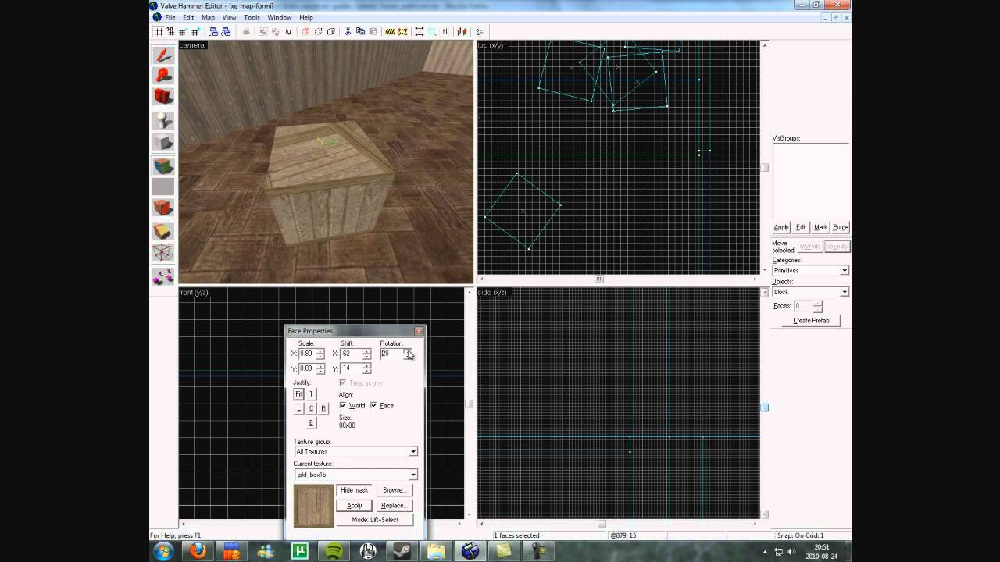

I have been using a few prefabs from primitives, like boxes, rectangles, cylinders, etc, to prototype levels before using actual static meshes. However, some primitives look very good and I could use them in the actual game if I could assign textures to them. Unfortunately, just wrapping a material on them doesn’t look very good. Is there a way to manipulate the UVs inside the engine? Kinda like the old Hammer editor, or this:

Modanung
Ever tried
Blender
? It is famous for its outstanding unwrapping capabilities.
S.L.C
Yeah but you spend extra time on importing stuff back and forth.
It is a nice feature to use for tweaking models quickly. Doesn’t have to be full featured. But I doubt it’ll be implemented any time soon.
suppagam
I do use Blender for my static meshes, but that’s not really the point of the question. As I said, I’m using unwrapped prefabs and primitives for prototyping, but some of them end up looking really good, so I don’t have to waste time actually doing a proper mesh for it in Blender, then going through the whole DCC flow. The only thing I need is a texture touch up inside the engine.
That’s even more useful since I tend to use lot’s of trim sheets. With basic rectangular shapes and one single texture trim sheet, I can build whole levels, then just decorate with static meshes.
Modanung
Did you look into custom geometry?
Dave82
I don’t think there is a out of box solution for this but you can lock a vertex buffer adjust the uv data then unlock it again.
Leith
Seems to me, the common shader uniforms cUOffset and cVOffset can be used to translate and rotate uv coordinates:
Animting UV offsets
I’m not really familiar with our editor, since I only recently got it to work properly, but surely we can expose these properties?
Sinoid
@Leith
those should already be added when creating a new material in the Editor (through the new button). If writing materials in text (or loading materials that were initially created that way) you’d have to manually add the
UOffset
and
VOffset
parameters in the GUI.
My proc-geometry repo has some aids:
There’s only DXUVAtlas & planar there (without rotation), but it’s trivial to copy+paste the planar one and then change the mapping function (ie. cylindrical, cube, spherical, etc).
Don’t forget, a lot of tools can export OBJ or another format supported by the ASSIMP importer, so you can use Quake/Half-life related tools and just determine what your material mapping is.